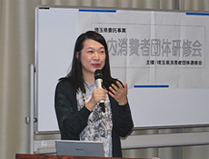
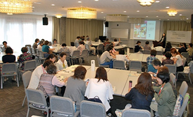

|
|
埼玉県消費者団体連絡会 6月27日(火)10時30分より、第1回県内消費者団体研修会を埼玉会館ラウンジと会議室で開催し、17消費者団体54人が参加しました。参加者は地域での消費者教育について学び、午後からは活動テーマや学習方法などを交流しました。 なお、研修会は｢自立した消費者の育成と消費者団体の活性化を目指す｣埼玉県の委託事業として開催しています。研修を通し県内の消費者団体の相互理解とネットワークを強め、活発な活動につなげることを目的に、学習や、活動の情報交換・交流をおこなっています。 参加者：17団体54人 加須市くらしの会、桶川市くらしの会、西部地区消費者団体活動推進世話人会、和光市消団連、伊奈町くらしの会、志木市くらしの会、松山婦人会、白岡市くらしの会、生活協同組合コープみらい、パルシステム埼玉、埼玉県地域婦人会連合会、新日本婦人の会埼玉県本部、埼玉公団住宅自治会協議会、埼玉母親大会連絡会、さいたま市消団連、埼玉県生活協同組合連合会、埼玉県消費者団体連絡会 1．学習会 公益財団法人消費者教育支援センター統括主任研究員の柿野成美さんを講師にお迎えし｢私たちができる、私たちだからできる地域での消費者教育｣と題して学習をおこないました。消費者が毎日の買い物で何を選ぶかで企業や社会が変わることを具体的な事例をもとにお話しいただき、グループワークを交えて学びました。消費者市民社会づくりのためには、エシカル消費やフェアトレードなど認知度がまだ低い現状であり、事業者や行政に加え、消費者の認識と行動が持続可能な社会の形成に不可欠です、と締めくくりました。 2．交流 午後からは6つのグループにわかれて、①午前中の講演の感想交流、②消費者教育の取り組みの現状、③新しい取り組みの企画立案はどうしていますか、など、3つのテーマを中心に話し合いました。交流後は全体会を再開し、各グループで交流された内容について報告があり、高校生がフェアトレードを学習し、新聞への投書や企業に手紙をおくる活動につながっていることに関心が寄せられました。また、若い世代はリボリング払いのことをよく知らずに簡単に購入できる世の中であり、消費者が購入するときにその背後にあることを考えることができるよう、消費者教育をすすめる大切さを一緒に共有しました。  |